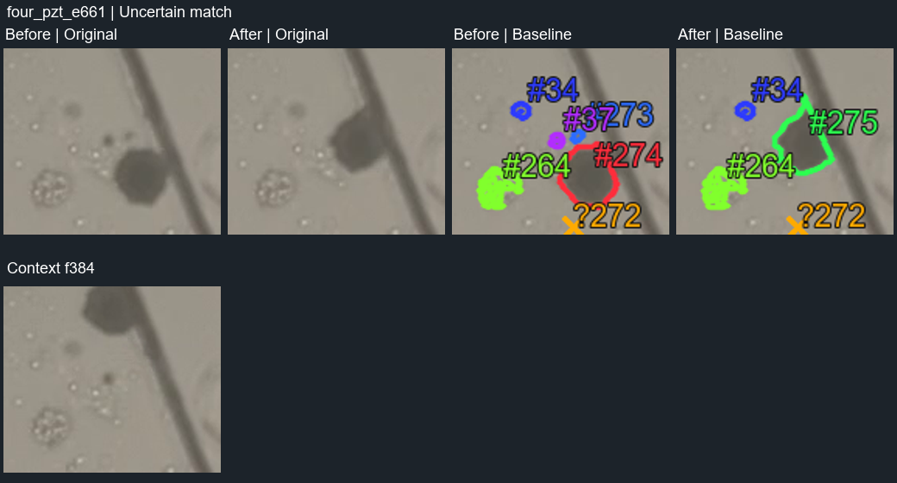
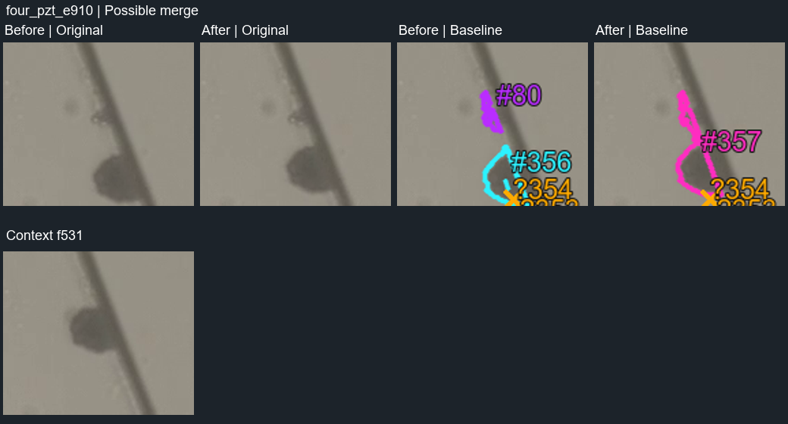
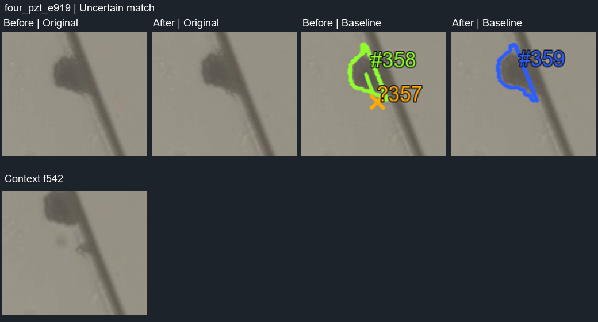
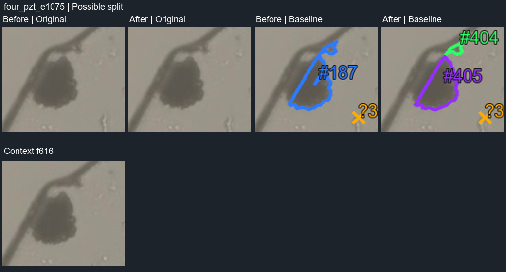
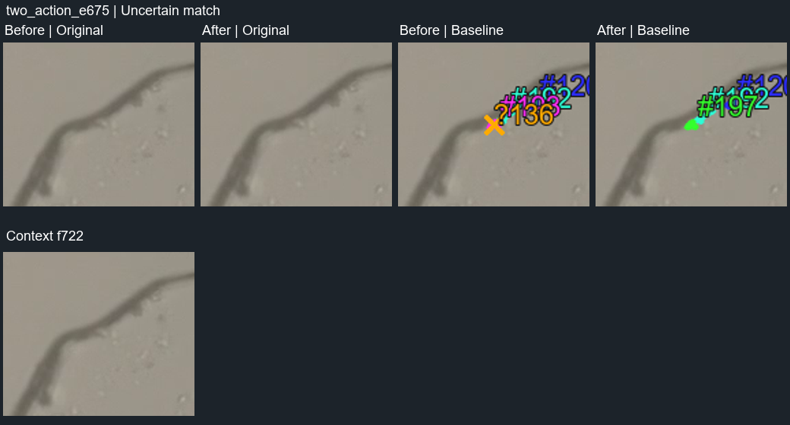
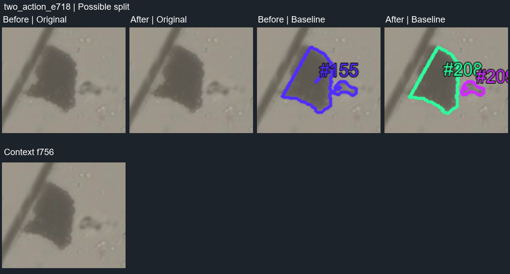
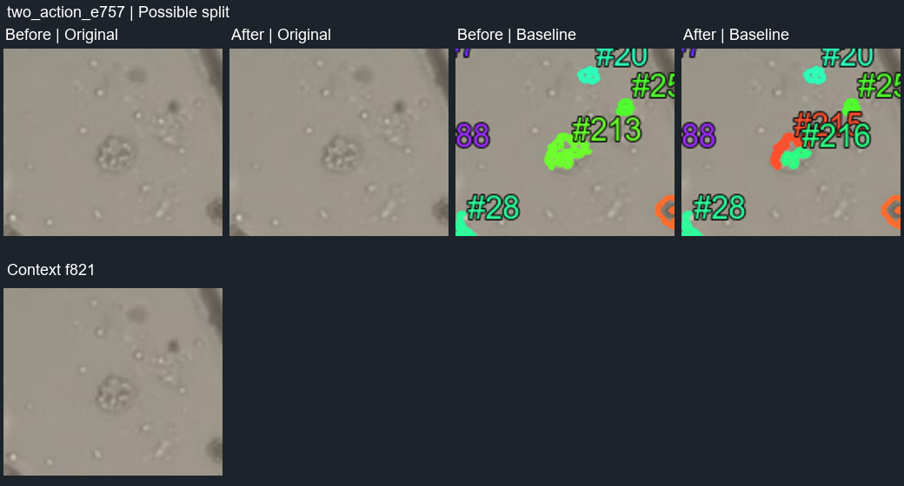

Baseline proposals only. Human reference pending.
Wall contact, shape change and an ambiguous ID change.

Does the contour incorrectly connect the dark region to the wall?

Does this remain the same moving region despite the ID change?

Visible separation or a wall-related contour error?

A small wall-adjacent region changes ID; is it a bubble region?

Is the small neighbour already separate before the reported split?

Visible separation or unstable thresholding inside a small group?

Repeated splitting at the same location; compare with the earlier case.